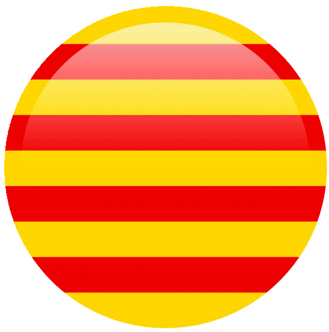

Construcciones ALDA
🧱 🔨 🏗️
📞 Llamar ahora 622 62 98 80
Envíanos un WhatsApp
Inicio
Quiénes somos
Qué hacemos
Proyectos
Contacto
Idioma ▼
Español
 Català
English
Contacto
Teléfono:
622 62 98 80
Zona de trabajo:
Cerdanyola del Vallès y alrededores
📞 Solicitar presupuesto